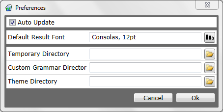

Auto Update: If this is selected the application will automatically check for new versions of itself and let you know that they are available.
Default Result Font: This is the font that will be used by default in the generation results
Temp Directory: When the application runs, it copies all grammar and theme files to a temporary directory. This is the path to the directory it copies to and can be changed to suit your needs.
Custom Grammar Directory: The path to the directory that contains custom grammars.
Custom Theme Directory: The path to the directory that contains custom themes.
Created with the Personal Edition of HelpNDoc: Free Web Help generator